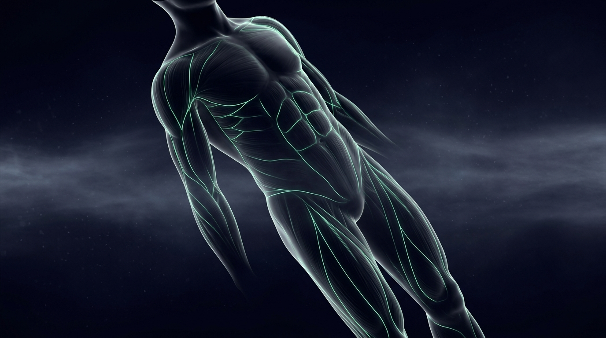
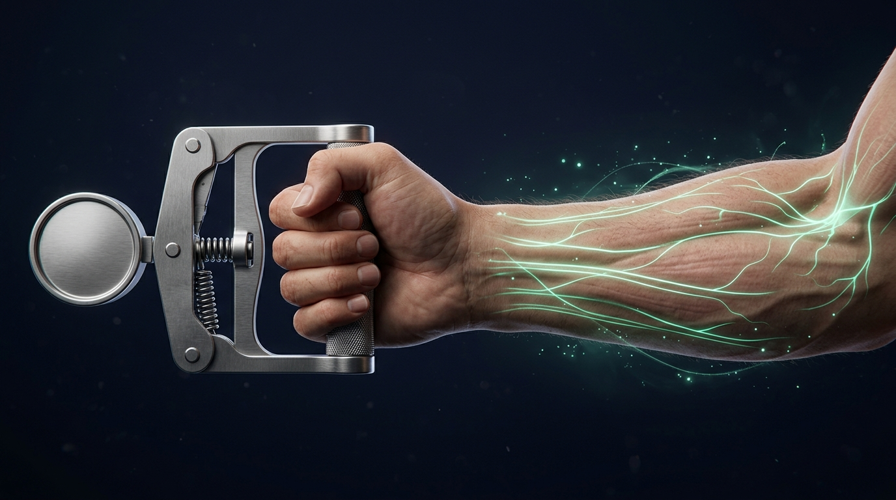

A balança desce e parece que só a gordura foi embora — mas não é isso que acontece. Em qualquer emagrecimento, inclusive com as canetas, parte do peso perdido vem da massa magra, onde está o seu músculo. Aqui você entende quanto se perde, o que os estudos de composição corporal já mediram e o que de fato protege o músculo durante o tratamento.

Massa magra não é estética — é função
Massa magra é tudo o que não é gordura: músculo, água corporal, órgãos e osso. A parte que mais interessa aqui é o músculo esquelético — e ele não serve só para levantar peso. É nele que a maior parte da glicose do sangue é captada depois de uma refeição, é ele que sustenta o gasto energético de repouso, protege as articulações e o osso, e é ele que define, lá na frente, se a pessoa sobe uma escada sem se apoiar e se levanta do chão sozinha.
Por isso perder músculo junto com a gordura não é um detalhe de vaidade: é perder uma parte do seu motor metabólico e da sua autonomia futura. Quando a perda de peso é grande e rápida, essa conta aparece mais.
Quanto de massa magra vai embora
As revisões dos estudos de composição corporal apontam que, em média, em torno de um quarto a um terço do peso perdido é massa magra — uma proporção parecida com a de outros emagrecimentos, por dieta ou cirurgia, e não um defeito exclusivo da caneta [3][4].
No subestudo de composição corporal do STEP 1, feito com densitometria, a semaglutida reduziu a massa gorda total em 19,3% e a gordura visceral em 27,4%, e a proporção de massa magra no corpo aumentou cerca de 3 pontos percentuais [1]. Ou seja: perdeu-se dos dois, mas proporcionalmente muito mais gordura — o corpo ficou com uma composição melhor do que antes.
Uma ressalva honesta: a densitometria mede massa magra, que não é sinônimo de músculo — parte do que desce é água. E essas análises foram exploratórias, não o objetivo principal dos estudos.

Perder massa magra não significou perder força
Um estudo francês acompanhou 115 pessoas com obesidade em uso de semaglutida 2,4 mg, com densitometria, medida de força de preensão palmar e gasto energético de repouso aos 7 e aos 12 meses. A massa magra caiu cerca de 3 kg nos primeiros 7 meses e depois se manteve estável, enquanto a massa gorda continuou caindo [2].
E a parte mais importante: a força de preensão palmar aumentou ao longo dos 12 meses, e a proporção de pessoas com obesidade sarcopênica — pouco músculo com muita gordura — caiu de 49% para 33% [2].
É um estudo observacional, sem grupo de comparação, então não prova causa. Mas mostra algo que a balança sozinha esconde: o que importa não é só quantos quilos de massa magra saíram, e sim se a função foi preservada.
Os três pilares, na prática
A perda de músculo não é destino. O que muda o resultado é o que se faz durante o tratamento:
Proteína suficiente
Com o apetite reduzido, o risco não é comer demais — é comer de menos e mal distribuído. As recomendações para quem está emagrecendo giram em torno de 1,2 a 1,6 g de proteína por quilo de peso por dia, divididos nas refeições, e boa parte das pessoas em uso de GLP-1 não alcança nem o piso [4]. A quantidade do seu caso quem calcula é o profissional que te acompanha.
Treino de força
Comer proteína sem estímulo não segura músculo: é a contração contra resistência que diz ao corpo para manter o que ele tem. O padrão recomendado é 2 a 3 sessões por semana, com carga progressiva, começando de onde o seu corpo está hoje [4].
Ritmo e medida
Perda muito rápida cobra mais caro em massa magra. Por isso o ritmo da subida de dose e o acompanhamento importam — e por isso a consulta não olha só o número da balança, mas composição corporal e força ao longo do tempo [2][4].
Para quem esse cuidado pesa mais
Algumas situações merecem vigilância maior: pessoas mais velhas, que já perdem músculo pela idade; quem já tem sinais de sarcopenia ou fraqueza; quem come pouca proteína; e quem está perdendo peso muito rápido. Nesses casos, proteína e treino deixam de ser recomendação genérica e passam a ser parte do tratamento.
Nada disso aqui indica, prescreve ou ajusta medicação — e nenhum número deste material deve ser aplicado ao seu caso sem avaliação. A conversa certa é na consulta, com a sua história, seus exames e seus objetivos na mesa.
Quer proteger o seu músculo enquanto emagrece?
A consulta é online e a avaliação é individual, com investigação e plano feitos para você.
Agendar consultaReferências
- Wilding JPH, et al. Once-Weekly Semaglutide in Adults with Overweight or Obesity (STEP 1). N Engl J Med. 2021;384(11):989-1002 — DOI 10.1056/NEJMoa2032183. Dados de composição corporal: análise exploratória por densitometria do STEP 1.
- Alissou M, et al. Impact of semaglutide on fat mass, lean mass and muscle function in patients with obesity: the SEMALEAN study. Diabetes Obes Metab. 2026;28(1):112-121 — DOI 10.1111/dom.70141
- How do glucagon-like peptide-1 receptor agonists affect measures of muscle mass in individuals with, and without, type 2 diabetes: a systematic review and meta-analysis — texto completo (PMC12137041)
- Lean Mass and Musculoskeletal Preservation in GLP-1-Based Obesity Treatment: Nutrition, Exercise, Supplementation, and Monitoring Strategies. Metabolites. 16(6):364 — texto completo
Este material é educativo e não substitui a consulta médica. Ele não indica, prescreve nem ajusta medicação, nem promove marca ou produto específico: cada caso precisa de avaliação individual.